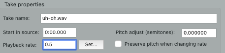
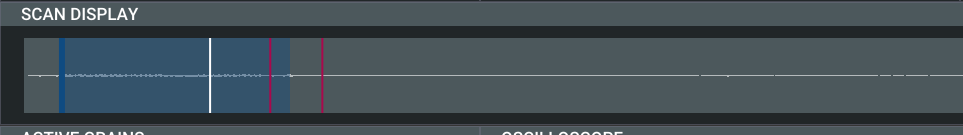
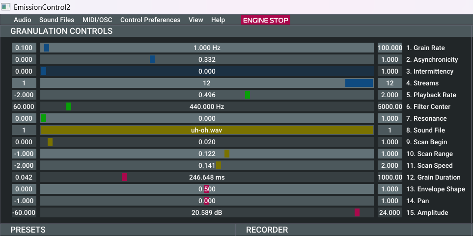
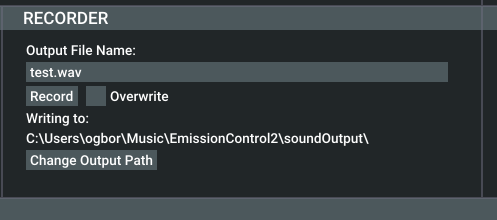

MEDIAART 2G03: Practice #6
Practice #6: make new sounds via exploratory transformations of your own original recordings
Goal: To transform one of your own original source recordings using (a) classical speed change, (b) spectral time/pitch shift, and (c) granular synthesis.
Purpose: These are three of the most common "exploratory" transformations of sound - that is to say, transformations that produce a relatively (or even completely) different sound (unlike the gentle tweaks of "corrective" transformations of sound). Making new sounds in these kind of ways is a possibility that is somewhat distinctive of electronic and digital approaches to audio.
Specifications: You will receive credit for a tutorial/practice submission in this folder that meets ALL of the following specifications (more detailed instructions are found below):
- The submission contains a ZIP archive containing ONLY a rendered WAV file (not source files, not a Reaper project folder or file)
- The WAV file demonstrates, in sequence, all three of the following techniques applied to a common source recording: classical speed change, spectral time/pitch shift, granular synthesis.
In most cases, the most efficient way to complete this will be during your assigned tutorial section. Don't hesitate to ask the instructor or teaching assistant for help if anything is unclear to you - but also don't hesitate to explore the software, try things out, and teach yourself!
Detailed Instructions
This tutorial/milestone covers a key set of techniques from the larger domain of "exploratory sound transformations" as discussed in the full class meeting and online modules. The text here does not fully explain the purpose and other considerations around the techniques, as it is assumed you are also attending the full-class meetings and completing the online modules where these things have been unpacked more amply. Rather, the text here simply presents a way of going about each of these techniques that have already been discussed elsewhere.
You'll need a short, clear original recording of your own. It could be something from your first project in the class, for example. You'll want something less than ten seconds long, as a separate sound file. You could pick a source from your project, for example, and render just ten seconds or less of it to a separate file that you can then work with during this milestone. Although any clearly recorded sound will work, you will likely get more interesting results with a recording that is very focused on one sound source (with a high signal to noise ratio) - such as a voice recording where the voice is overwhelmingly the main thing we hear. Once you have that source file all ready to "transform in an exploratory way", create a new Reaper project and import the source file into that Reaper project.
1. Classical speed change
Classical speed change can be achieved through Reaper's Media Item Properties dialog. Right click on an audio region and select Item Properties to bring up this dialog. To do classical speed change (in which frequency/pitch change as length in time changes) be sure to UNSELECT "Preserve pitch when changing rate". Now entering a number other than 1 in Playback Rate will be doing classical speed change - numbers between 0 and 1 will being slowing down the playback rate, and numbers greater than 1 will increase it. Note that there is often more to explore in terms of slowing down than speeding up, so in your explorations, you may want to spend more time trying out numbers between 0 and 1 than numbers greater than 1. For example, 0.5 would play things back at half the normal speed. Reaper doesn't automatically change the length of the audio region when you do this, so as you put in lower numbers you'll have to change the size of the audio region by grabbing on its right edge and extending it, also (and this works better with "snap" off, as discussed in the first tutorials).

2. Spectral time/pitch change
Spectral time/pitch change (as discussed in more detail in the full-class meetings and online modules) is also accessed through the Media Item Properties dialog. The key thing is to SELECT "Preserve pitch when changing rate". Now what you can do is work with both the playback rate setting and the Pitch adjust setting (right above Preserve pitch when changing rate).
Playback rate still works more or less as it did for classical speed change - for example, a playback rate of 0.25 (ie. 1/4) would play back things 4 times slower and so it would take 4 times longer to get through the same material. But now, using spectral time/pitch change, Reaper will attempt to keep things at the same frequency (and thus, perceived pitch) as they are stretched. The pitch adjustment is in "semitones" - this is a unit for expressing changes of frequency where +12 equals twice as fast (one "octave" up in pitch) and -12 equals half as fast (one "octave" down in pitch), and 0 = no change in frequency/pitch.
As an example, a playback rate of 0.1 with a pitch adjust of -5 would give us a resulting sound that is ten times longer than the original (once we adjust the region by dragging on its right edge) with all of the frequencies/pitches somewhat lower. Try out different settings, being sure to try both playback rates that are close to 1 and those that are close to 0, and being sure to try pitch adjusts across the broad range between -60 and +24 or so (5 octaves down, 2 octaves up).
3. Granular synthesis
Granular synthesis (as discussed in the full-class meetings and online modules) is, for better or for worse, achieved with a wide variety of different software approaches, none of which are built into Reaper. For this, we'll use another piece of software (free and open source), called emissioncontrol2, instead.
It's installed on the Media Arts Wing computers, but you could also choose to install it on your own computer if you prefer. If so, you would download version 1.2 of emissioncontrol2 from https://github.com/EmissionControl2/EmissionControl2/releases - make sure you get 1.2 not an earlier version! Note: On the Media Arts Wing Windows computers (not the Macs) emissioncontrol2 is installed but you have to find it by using File Explorer to navigate to C:\ProgramFiles (x86)\EmissionsControl2 (it won't come up on the menu but it is there).
One emissioncontrol2 has launched, click Remove Current Sound File, then Load Sound File and select your own sound file you wish to granulate. You should see a visual rendition of the sound file in the area labeled "Scan Display":

Press Engine Start and you should probably hear something, like an individual grain of sound intermittently. If it looks like the levels in your source sound file are a bit low, you may need to move the slider labelled "15. Amplitude" further to the right until you hear something.
The controls labeled "9. Scan Begin" and "10. Scan Range" will determine the "window" that the software will scan through to select grains from. Move these controls to focus that window in on a segment of the sound you wish to granulate/stretch. You can use the "Scan Display" area of the interface for a visual depiction of what you currently have "windowed".
To really get the effect of granular synthesis you probably want parameters in "Granulation Controls" to be something like this:
- Grain Rate: 10-20 Hz (10-20 times per second)
- Asynchronicity: Around 0.1
- Streams: 12 (or more)
- Playback Rate: Works just fine at 1 (no change in playback rate), but just as with classical speed change, lower playback rates that stretch the grains and lower their pitch are always fun.
- Grain Duration: Probably somewhere between 10 and 100 ms. Shorter grains will work "smoother" with a higher grain rate and vice verse (longer grains will work "smoother" with a somewhat lower grain rate).

When you're getting sounds you want to save for later use (e.g. importing into Reaper for further processing, editing, transformation, etc) you can click the button labeled "Change Output Path" to select a folder on the computer where a WAV file will be created, then enter a specific and thoughtfully chosen name for the recording in "Output File Name". Pressing "Record" will make it start recording to that file and pressing it again will finish/finalize the recording:

Once you've explored all three techniques above, arrange them in sequence in time in your Reaper project, render, zip the rendered file, and submit!